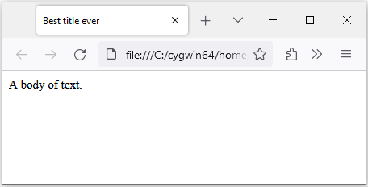

HTML and JavaScript
Let's now discuss the markup of our dialog box. HTML stands for HyperText Markup Language. Whereas CSS is concerned with how to display our dialog box, HTML and JavaScript are used to tell Bitburner (and a web browser) what to display. An HTML document usually has a head element and a body element, as shown in the following sample HTML document:
Here is what the HTML document looks like when rendered by a web browser (in this case Firefox):

The head of an HTML document contains metadata meant for the web browser to process. JavaScript code and CSS can be embedded in the head section of an HTML document. The body of an HTML document contains the content, that which is displayed on a web browser.
Our dialog box is modelled on the head/body structure of an HTML document. The line
const doc = globalThis["document"];
obtains a reference to the HTML document, allowing us easy access to the document itself. The code
doc.head.insertAdjacentHTML("beforeEnd", `<style id=box-css>${css}</style>`);
uses the method
insertAdjacentHTML()
to insert our CSS code into the head of the document. The parameter
"beforeEnd" means we want to insert our CSS code just before the end of the
head element.
Now comes the markup of our dialog box. The block of code
uses the div
HTML element to declare the content of our dialog box. The title of our box is
inserted in the head component of the box. We use the character X to indicate
a button for closing the box. The content of our box is inserted into the body
of the box. The line of code
const box = doc.querySelector("body>div:last-of-type");
obtains a reference to the div container that defines our box. The method
querySelector
allows us to query the HTML document for a specific element and returns the
first match. The box div is the last to be added. The selector string
"body>div:last-of-type"
allows us to locate the last div added. Having obtained a reference to our box
div, we use the reference to set the initial position of the box as shown in
the code
box.style.left = "500px";
box.style.top = "800px";
The above code positions the top-left corner of the dialog box at the pixel coordinates .
Recall that the character X is inserted into the head component of our box.
Its purpose is to serve as a button to close the box. As shown in the code
"<span class=close>X</span>";
we use the CSS block
.box .close{
}
to control how the close button is presented. For now, the closing button
inherits the default styling of the head of the box. If we click on the X, we
want the box to close. To achieve the latter effect, the line of code
box.querySelector(".close").addEventListener("click", () => box.remove());
locates the component that contains the X and uses the method
addEventListener()
to setup a way to close the box. An
event
is something that happens in your HTML document. The event we are interested in
is when the X button is clicked, hence the
click event
as specified by the string "click". The arrow function expression
() => box.remove();
is activated when a click event is registered on the X button. All of the
above means that after running the script box.js, a dialog box is displayed
and clicking on the X button would close the box.